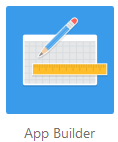
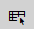
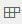
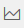
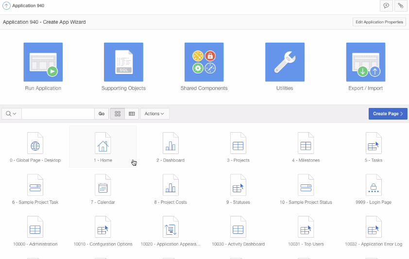

Creating
an Application by Using the Create Application Wizard
Before You Begin
This 10 minute tutorial shows you how to create an application
by using the Create Application Wizard in Oracle Application
Express 18.1. This is the second tutorial in the series Using
the Create Application Wizard in Oracle Application Express
18.1. Read the tutorials in sequence:
Creating an Application by Using the Create
Application Wizard 18.1
Background
The Create Application Wizard allows you to create applications
in Oracle Application Express 18.1. To create an
application, you must add pages, define navigation, define theme
and style, add features and configure settings of the
application in the Create Application Wizard.
In this OBE, you will learn how to create the application Create
App Wizard by using the Create Application Wizard in
Oracle Application Express 18.1.
What Do You Need?
Access to Oracle Application Express 18.1.
Install the sample dataset, Project Data in your
workspace.
Create
an Application
To create an application:
Sign in to Oracle Application Express 18.1 by entering the
credentials:
Workspace: Enter
Username: Enter
Password: Enter
Workspace: Enter hr
Username: Enter hr
Password: Enter oracle
On the Workspace home page, click App Builder. 
Click Next. The Create an Application dialog opens.
In the Name field, enter the name Create App
Wizard.
Click Set Appearence to change the appearance of the
application.
In the Appearance dialog, set the following:
Theme Style: Select Vita Red
Navigation: Select Side Menu
Application Icon: Select New Icon
In the Choose Application Icon dialog, click and select the icon
.
Click Set Application Icon.
Click Save Changes.
Add
Pages
Oracle Application Express offers you different types of pages
that you can add in your application. You must define at least
one page before you can create your application. You can add
more pages in your application by using the Create Page Wizard.
In this section, you will learn how to add the following pages
in the application Create App Wizard.
The Calendar page displays a calendar in your
application with the attributes that you define here. To add a
calendar in the application:
On the Create an Application page, click Add
Page.
Click Calendar.
On the Add Calendar page, define the following attributes:
Page Name: Enter Tasks
Calendar.
Set Icon: Select the icon to be displayed in
the navigation menu for this page.
Table or View: Select SAMPLE$PROJECT_TASKS.
Display Column: Select NAME.
Start Date Column: Select START_DATE.
End Date Column: Select END_DATE.
Show Time: Select NO to
show the time portion for events and also enable the Weekly
and Daily calendar views. Select No to only show the dates
for events.
Click Add Page. The calendar Tasks
Calendar appears under Pages in the Create
Application wizard.
2.2 Add an Editable Interactive Grid
The Interactive Grid page allows you to
update data directly. It is similar to a spreadsheet. An
interactive grid presents you a set of data in a searchable,
customizable report. To add an interactive grid:
In the Create Application wizard, click Add Page.
Select Interactive Grid.
On the Add Interactive Grid page, define the following
attributes:
Page Name: Enter the name Milestones.
Set Icon: Select the icon  to be displayed
in the navigation menu for this page.
Select Table or View to set it as the
data source for the interactive grid. When you select Table or
View, the Table or View field appears to select the
data source table.
In the Table or View field, select SAMPLE$PROJECTS_MILESTONES.
Select Allow Editing to render the
interactive grid as editable.
Click Add Page. This page Milestonesappears under Pages in the Create Application wizard.
2.3 Add an Interactive Report with Form
In this section, you will create an Interactive Report with
Form on the table SAMPLE$PROJECT_TASKS. You choose the table on
which to build a report, or provide a custom SQL SELECT
statement or a PL/SQL function returning a SQL SELECT statement.
You then choose the report type (that is, Interactive Report or
Classic Report).
To add an interactive report with form:
In the Create Application wizard, click Add Page.
Select Report.
On the Add Report page, define the following attributes:
Page Name: Enter Tasks
Set Icon: Select the icon  to be
displayed in the navigation menu for this page.
Click Table or View to set the data
source.
Click Interactive Report to render this
report as an interactive report in the application Create
App Wizard.
In the Table or View drop-down list, select SAMPLE$PROJECT_TASKS.
Select Include Form to include a linked
form page to enable users to maintain the table values.
Expand Lookup Columns to define the lookup
columns and the corresponding display columns. In this OBE, we
will define two lookup columns as follows:
Lookup Key 1: Defines the column to
change to output the display column. Select PROJECT_ID.
Display Column: Defines the the column
from the lookup table to be displayed. Select SAMPLE$PROJECTS.NAME
Click Add Page. The page Tasks appears
under Pages in the Create Application
wizard.
2.4 Add a Chart
Adding charts creates a page which displays an area, bar, line,
or pie chart. To add a chart:
In the Create Application wizard, click Add Page.
Enter the following attributes:
Page Name: Enter Project
Costs
Set Icon: Select the icon  to display in the
navigation menu for this page.
Chart Type: You can select the type
of chart to display such as Area, Bar, Line, Pie. For this
tutorial, select Bar.
Table or View: Select
SAMPLE$PROJECTS_TASKS
Label Column: Select PROJECT_ID
Select Sum.
Value Column: Select a numeric
column from the table or view which is used to calculate the
chart values displayed. Select COST. This will
provide you the sum of the cost based on the
SAMPLE$PROJECTS_TASKS table.
Click Add Page. The page Project
Costsappears under Pages in the Create
Application wizard.
2.5 Add a Dashboard
To add a Dashboard page containing multiple charts:
In the Create Application wizard, click Add Page
and select Dashboard.
In the Page Name field, enter the name Dashboard.
Set icon: Select .
Click Chart 1 to create
the first chart and enter the following details:
Chart Type: Click Bar
Chart Name: Enter Project
Budgets
Table or View: Select
SAMPLE$PROJECTS
Label Column: Select Name
Select Column Value
Value Column: Select Budget
Click Chart 2 to create the second chart and enter
the following details:
Chart Type: Click Pie
Chart Name: Enter Project
Status
Table or View: Select SAMPLE$PROJECTS
Label Column: Select Status_ID
Select Count
Value Column: Select All Columns
Click Add Page. The page Dashboard
appears under Pages in the Create Application wizard.
2.6 Add a Report
In this section, you will create a report with form on status,
and make it an administrative page. This means that this report
will be accessible only to the administrator. To create the
report:
In the Create Application wizard, click Add Page
and select Report.
In the Page Name field, enter the name Statuses.
Select Table or View and Interactive
Report.
In the Table or View field, select SAMPLE$PROJECTS_STATUS.
Select Include Form.
Now, to set this page as an administrative page, click Advanced
and select Set as Administrative Page. This
renders the page as an administrative page that can be
accessed by the user with administration role.
Click Add Page. The page Statuses
appears under Pages in the Create Application wizard.
Edit
Pages
The Create Application Wizard allows you to organize and delete
pages that you have added in an application. You can also add
additional pages to the application. In the Create an
Application page of the wizard, you can:
Arrange the pages in the order that you want them to appear
in your application
Remove pages
To reorder pages:
In the Page section of the Create an Application wizard,
click and drag the hamburger page icon at the end of each page
listing.
Drop that page in the order that you prefer in the list.
Note: The home page is always displayed first and
cannot be reordered.
Administrative pages are always displayed at the bottom of the
list and the order dictates how they appear in the Application
Administration list on the Administration page.
Add
Features
Oracle Application Express offers the following features that
you can add to your application. You can any one or all of the
features. In this tutorial, you will apply all of these
features. In the Features section of the Create Application
Wizard:
Select Check All to apply all the features
in your application. The available features are:
About Page: To include a
description about the application page.
Access Control: To incorporate role
based user authentication within your application.
Activity Reporting: To include
numerous reports on end user activity for your application.
Configuration Options: To allow
application administrators to enable or disable specific
functionality within the application.
Feedback: To provide a mechanism
for end users to post general comments back to the
application administrators and developers.
Theme Style Selection: To allow
administrators to customize color scheme (theme style) for
the application. You can define the default theme style, and
select various theme styles.
Configure
Settings
In the Settings section, specify the settings used in the
generation of the application. You can configure the following
settings under the Settings section:
Application ID: This field contains an
automatically generated identifier by default. You may enter a
unique, numeric identifier for your application.
Schema: Select obe, the database
schema that stores database objects, for this application Create
App Wizard.
Language: Select English (en) as
the primary language for this application.
Authentication: Select an option on how you
want users to authenticate into your application. For this
tutorial, select Application Express
Accounts.
Advanced Settings: Set additional
definition, security and globalization settings. You can apply
these settings when creating the application, and edit them
after creating the application. Click Advanced Settings,
and enter the following in the Advanced Settings window:
Short Description:Maintain
Project Details
Description:Allows
users to insert, update, and delete all of the details
related to project management including projects,
milestones, and tasks.
Click Save Changes.
User Interface Defaults: Set defaults for
user interface settings, such as rows per page, and add list
of values definitions. These settings are used when generating
components within the application.
Create
and Run the Application
To complete the application creation process, run the
application. To run the application:
After you have completed adding the pages, and features,
click Create Application.
The application creation process begins. The progress bar
indicates the progress.
Once the application creation is complete, the application is
displayed in the App Builder home page, as shown in the
screenshot. You can see that the home page displays the
application ID, application name, the pages that you created,
and a number of additional pages that are created to implement
the features that you selected. Run the application to
implement it.
 Description
of the illustration create_aap_wizard_homepage.png
In the App Builder home page, click Run
Application. You are redirected to the sign in
page of the application Create App Wizard.
Sign in to the application using your credentials. The Create
App Wizard application opens as shown in the screenshot.
Description of the
illustration the_app.png
This completes the task of creating an application by using
the Create an Application wizard.
 Creating
an Application by Using the Create Application Wizard
Creating
an Application by Using the Create Application Wizard  Before You Begin
Before You Begin Create
an Application
Create
an Application to change the appearance of the
application.
to change the appearance of the
application. Add
Pages
Add
Pages Edit
Pages
Edit
Pages Add
Features
Add
Features Configure
Settings
Configure
Settings Create
and Run the Application
Create
and Run the Application